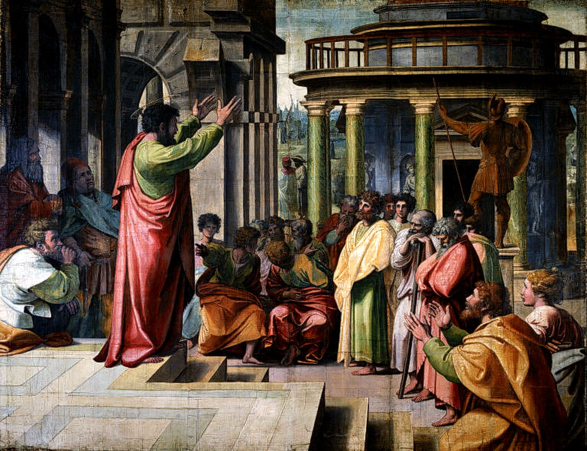

<head>
<meta charset="UTF-8" />
<meta name="keywords" content="drawing, painting" />
<meta name="description" content="drawings by Sunjy" />
<title>Sunjy</title>
<link rel="shortcut icon" type="image/x-icon" href="../../mImages/mCommon/favicon.ico" media="screen" />
<link rel="stylesheet" type="text/css" href="../../mCsses/mCommon/mCssA.css" />
<link rel="stylesheet" type="text/css" href="../../mCsses/mCommon/mCssB.css" />
<link rel="stylesheet" type="text/css" href="../../mCsses/mCommon/mCssC.css" />
<link rel="stylesheet" type="text/css" href="../../mCsses/mCommon/mCssD.css" />
<link rel="stylesheet" type="text/css" href="../../mCsses/mContent/mCssA.css" />
<link rel="stylesheet" type="text/css" href="../../mCsses/mContent/mCssB.css" />
<link rel="stylesheet" type="text/css" href="../../mCsses/mContent/mCssC.css" />
<link rel="stylesheet" type="text/css" href="../../mCsses/mContent/mCssD.css" />
</head>
<script type="text/javascript" src="../../mScripts/mContent/mContentAA.js" /></script>
<script type="text/javascript" src="../../mScripts/mContent/mContentAB.js" /></script>
<script type="text/javascript" src="../../mScripts/mContent/mContentAC.js" /></script>
<script type="text/javascript" src="../../mScripts/mContent/mContentAD.js" /></script>
<script type="text/javascript"></script> 
<script type="text/javascript">
document.write('<div class="mImgAbsolute"></div>');
/*
document.write('<p class="mFontSizeBColor" />From a white paper...</p>');
document.write('<table class="center"><tr><td>');
document.write('');
document.write('</td></tr></table>');
*/
</script>


<script type="text/javascript">
document.write('<p class="mFontSizeBColor" />St Paul Preaching in Athens</p>');
document.write('<p class="mFontSizeSColor" />By Raphael. “St. Paul Preaching in Athens” depicts the Apostle Paul in Athens, delivering a sermon at the Areopagus, as recounted in Acts of the Apostles in the Bible.<br><br>The Areopagus sermon is the most dramatic and fullest reported speech in the missionary career of Saint Paul.<br><br>Raphael has positioned us as one the listeners, joining the circle of people the Apostle is addressing. The audience is reacting in very different ways.<br><br>The man and woman on the right at the front are Damaris and Dionysius, who converted and became followers of Paul.<br><br>Raphael has created a classical scene by integrating into the composition motifs from Roman reliefs and ancient figures, buildings, and statues.<br><br>After Paul had encountered conflict as a result of his preaching in Thessalonica, he was taken to Athens as a place of safety.<br><br>While he was waiting for his companions to arrive, Paul was distressed to see Athens full of idols. So Paul went to the synagogue and the Agora on several occasions to preach about the Resurrection of Jesus.<br><br>Some Greeks then took him to a meeting at the Areopagus, the high court in Athens, to explain himself. The Areopagus was a center of temples, cultural facilities, and a high court.<br><br>Paul’s sermon illustrates the beginnings of the attempts to reveal Jesus Christ’s nature and his role in salvation.<br><br>“And Paul stood in the midst of the Areopagus, and said, Ye men of Athens, in all things, I perceive that ye are very religious.<br><br>For as I passed along and observed the objects of your worship, I also found an altar with this inscription, TO AN UNKNOWN GOD. What, therefore, ye worship in ignorance, this I set forth unto you.<br><br>The God that made the world and all things therein, he, being Lord of heaven and earth, dwelleth not in temples made with hands; neither is he served by men’s hands, as though he needed anything, seeing he himself giveth to all life, and breath, and all things; and he made of one every nation of men to dwell on all the face of the earth, having determined [their] appointed seasons, and the bounds of their habitation; that they should seek God if haply they might feel after him and find him, though he is not far from each one of us: for in him we live, and move, and have our being; as certain even of your own poets have said, For we are also his offspring.<br><br>Being then the offspring of God, we ought not to think that the Godhead is like unto gold, or silver, or stone, graven by art and device of man.<br><br>The times of ignorance, therefore, God overlooked; but now he commandeth men that they should all everywhere repent: inasmuch as he hath appointed a day in which he will judge the world in righteousness by the man whom he hath ordained; whereof he hath given assurance unto all men, in that he hath raised him from the dead.”<br><br>After the sermon, several people became followers of Paul. In the 20th century, Pope John Paul II likened the modern media to the New Areopagus, where Christian ideas needed to be explained and defended anew, against disbelief and the idols of gold and silver.<br><br>The Areopagus is a prominent rock outcropping located northwest of the Acropolis in Athens, Greece. In pre-classical times (before the 5th century BC), the Areopagus was used as the council of elders of the city. In classical times, it functioned as the court system.<br><br>In Roman times, it was from this location, drawing from the potential significance of the Athenian altar to the Unknown God, that the Apostle Paul is said to have delivered the famous speech.<br><br>The term “Areopagus” also refers to the judicial body of aristocratic origin that subsequently formed the higher court of modern Greece.</p>');
document.write('<table class="center" /><tr><td>');
document.write('<br>The Areopagus sermon is the most dramatic and fullest reported speech in the missionary career of Saint Paul.<br><br>Raphael has positioned us as one the listeners, joining the circle of people the Apostle is addressing. The audience is reacting in very different ways.<br><br>The man and woman on the right at the front are Damaris and Dionysius, who converted and became followers of Paul.<br><br>Raphael has created a classical scene by integrating into the composition motifs from Roman reliefs and ancient figures, buildings, and statues.<br><br>After Paul had encountered conflict as a result of his preaching in Thessalonica, he was taken to Athens as a place of safety.<br><br>While he was waiting for his companions to arrive, Paul was distressed to see Athens full of idols. So Paul went to the synagogue and the Agora on several occasions to preach about the Resurrection of Jesus.<br><br>Some Greeks then took him to a meeting at the Areopagus, the high court in Athens, to explain himself. The Areopagus was a center of temples, cultural facilities, and a high court.<br><br>Paul’s sermon illustrates the beginnings of the attempts to reveal Jesus Christ’s nature and his role in salvation.<br><br>“And Paul stood in the midst of the Areopagus, and said, Ye men of Athens, in all things, I perceive that ye are very religious.<br><br>For as I passed along and observed the objects of your worship, I also found an altar with this inscription, TO AN UNKNOWN GOD. What, therefore, ye worship in ignorance, this I set forth unto you.<br><br>The God that made the world and all things therein, he, being Lord of heaven and earth, dwelleth not in temples made with hands; neither is he served by men’s hands, as though he needed anything, seeing he himself giveth to all life, and breath, and all things; and he made of one every nation of men to dwell on all the face of the earth, having determined [their] appointed seasons, and the bounds of their habitation; that they should seek God if haply they might feel after him and find him, though he is not far from each one of us: for in him we live, and move, and have our being; as certain even of your own poets have said, For we are also his offspring.<br><br>Being then the offspring of God, we ought not to think that the Godhead is like unto gold, or silver, or stone, graven by art and device of man.<br><br>The times of ignorance, therefore, God overlooked; but now he commandeth men that they should all everywhere repent: inasmuch as he hath appointed a day in which he will judge the world in righteousness by the man whom he hath ordained; whereof he hath given assurance unto all men, in that he hath raised him from the dead.”<br><br>After the sermon, several people became followers of Paul. In the 20th century, Pope John Paul II likened the modern media to the New Areopagus, where Christian ideas needed to be explained and defended anew, against disbelief and the idols of gold and silver.<br><br>The Areopagus is a prominent rock outcropping located northwest of the Acropolis in Athens, Greece. In pre-classical times (before the 5th century BC), the Areopagus was used as the council of elders of the city. In classical times, it functioned as the court system.<br><br>In Roman times, it was from this location, drawing from the potential significance of the Athenian altar to the Unknown God, that the Apostle Paul is said to have delivered the famous speech.<br><br>The term “Areopagus” also refers to the judicial body of aristocratic origin that subsequently formed the higher court of modern Greece." />');
document.write('</td></tr></table>');
</script>


